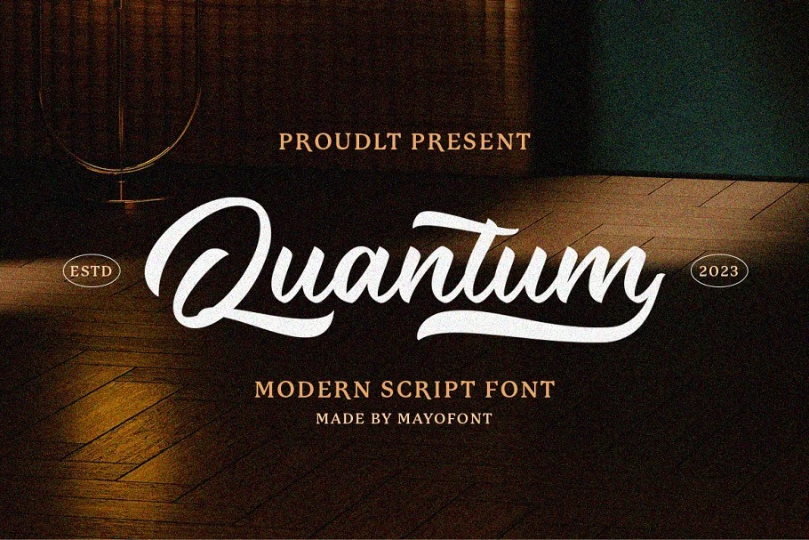

Nuevo Lenguaje de Programación Revoluciona la Industria: Introducción a "QuantumScript"

En una sorprendente revelación, un equipo de investigadores ha anunciado el lanzamiento de "QuantumScript", un lenguaje de programación revolucionario que promete cambiar para siempre la forma en que interactuamos con la informática cuántica.
A diferencia de los lenguajes de programación tradicionales, QuantumScript está diseñado específicamente para aprovechar las propiedades únicas de la computación cuántica, permitiendo a los desarrolladores escribir código que aproveche la superposición y la entrelazación cuántica para realizar cálculos extremadamente complejos de manera más eficiente que nunca.
Con el potencial de acelerar significativamente el desarrollo de algoritmos cuánticos y abrir nuevas posibilidades en áreas como la criptografía, la optimización y la simulación, QuantumScript está generando un gran revuelo en la comunidad de desarrollo de software y se espera que impulse avances significativos en la próxima era de la computación cuántica.